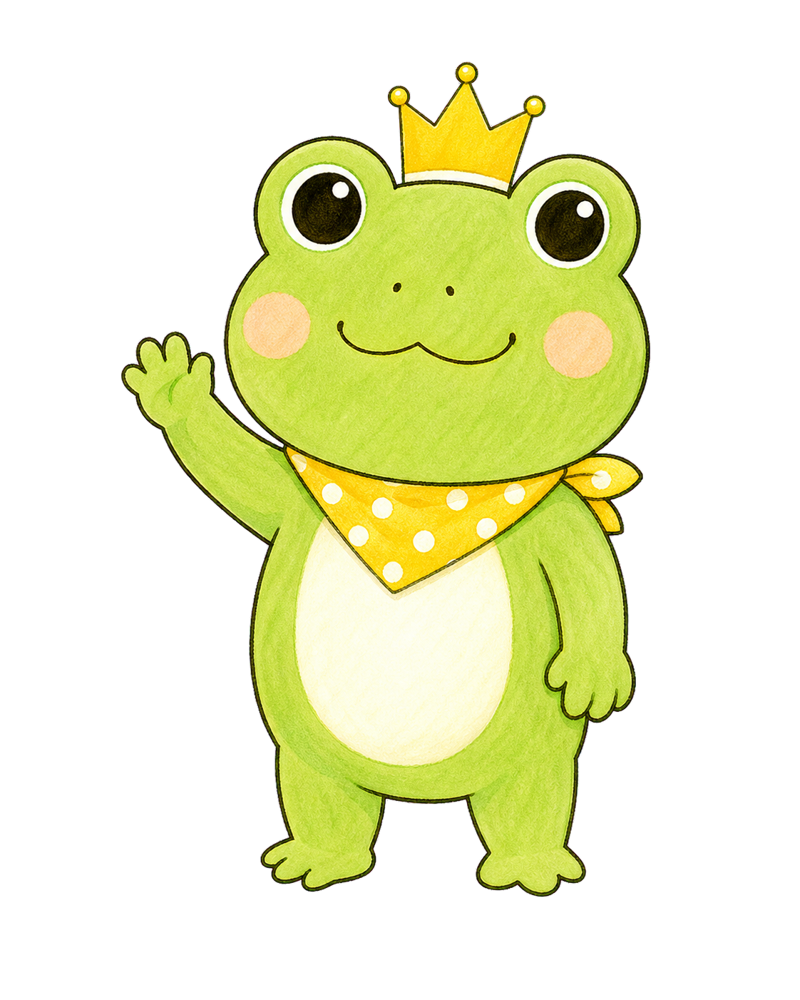

✿ らりるれ楽家事研究室

動画連動ワーク
動画を見た後に、備蓄を「家族が迷わず使える形」に整えるための記録・確認・保存用ワークです。
入力内容はこの端末に自動保存されます。
「備蓄専用品」でなくても大丈夫。普段から食べて、なくなると買い足す、日持ちのするものを選びましょう。
選んだ食品だけで、家族が3日続けて過ごせそうでしょうか。
よく食べるものに、一緒に使いたいものを組み合わせてみましょう。まずは1組だけでも十分です。
「自分がいなくても使えるか」を想像して、今の状態に一番近いものを選びましょう。
今日または近いうちにできそうなことを、1つ選びましょう。
結果画面